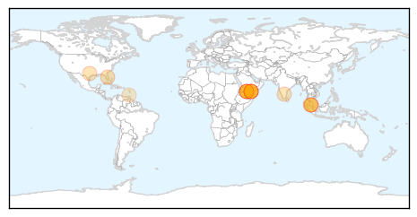

Dengue Fever
30-Day Web Trend
3 alerts, 6 warnings

30-Day Twitter Trend
1 alerts, 0 warnings

Article Locations
Article Confidences

Top Articles:
- 0.997
- Yemen's health situation 'disastrous', officials say
- 0.984
- Int'l aid delivered to Yemen to cope with health crisis
- 0.973
- WHO: 3,000 cases of dengue fever in Yemen reported since March
- 0.965
- Dengue cases with more complicated symptoms this year, says Health Ministry
- 0.957
- Hard Times: 'Yemen has over 3,000 Dengue cases, figure expected to get higher'
- 0.924
- Orange County officials to talk mosquito safety, prevention
- 0.922
- Farsnews
- 0.919
- More than 3,000 dengue cases in Yemen since March: WHO
- 0.904
- WHO concerned about rise in dengue cases in Yemen
- 0.903
- Health Ministry: Malaysia prepared to face MERS, but Dengue threat remains - Nation
- 0.855
- Experts Warn Of Mosquito Infestation This Summer
- 0.833
- The dreaded Dengue returns and you can’t count on platelets
- 0.764
- 39 killed in south Yemen clashes
- 0.654
- MOH intensifies Fogging Campaign against Mosquito-Borne Virus
- 0.618
- Country faces largest dengue epidemic ever
Top Tweets:
- 0.718
- Flavivirus news: At least 3000 suspected Dengue fever cases reported in Yemen – UN health ... -... http://t.co/yBZwfiGpCj pathogenposse
- 0.650
- Flavivirus news: Thousands of Cases of Dengue Fever Reported in Yemen: UN - Newsweek: NewsweekT... http://t.co/wmwFxVuKdF pathogenposse
Cholera
30-Day Web Trend
0 alerts, 0 warnings

30-Day Twitter Trend
3 alerts, 0 warnings

Article Locations

Article Confidences

Top Articles:
- 0.999
- South Sudan Cholera Outbreak Kills 18, Over 170 Infected
- 0.998
- Cholera outbreak kills seven in South Sudan
- 0.998
- South Sudan government declares cholera outbreak
- 0.995
- South Sudan government declares cholera outbreak
- 0.994
- KUNA : Cholera kills 18 people in S. Sudan, 171 cases confirmed
- 0.987
- Roundup: Cholera outbreak brings more pain, sufferings to S. Sudanese
- 0.986
- South Sudan cholera outbreak kills at least 18
- 0.985
- At least 18 people die of cholera in South Sudan in three weeks
- 0.981
- Cholera outbreak kills 18 in South Sudan
- 0.980
- South Sudan Suffers New Cholera Outbreak
- 0.980
- Children at risk from cholera outbreak in South Sudan
- 0.979
- Mdecins Sans Frontires to carry out oral cholera vaccination for Burundian and Congolese refugees in Tanzania
- 0.977
- Second round of cholera vaccinations kickoffs in Unity State - South Sudan
- 0.974
- Cholera outbreak kills 19 in South Sudan
- 0.974
- Cholera outbreak kills 18 in south Sudan
- 0.973
- At least 18 people die of cholera in South Sudan in three weeks
- 0.972
- Cholera outbreak kills 18
- 0.971
- Cholera Outbreak Kills 18 In South Sudan
- 0.963
- Cholera outbreak kills 18 in South Sudan
- 0.881
- S/Sudan govt confirms cholera outbreak
- 0.670
- FG Must Strengthen Environmental Health Laws, Articles
Top Tweets:
-
No tweets found for Jun 23, 2015